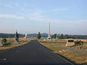
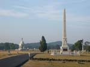
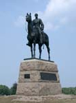
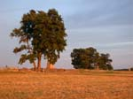

| page 13 of 13 |
| Day Three with Prof. Gary Gallagher 7/28/2001 |
UCLA at Gettysburg Journal |
| page 13 of 13 |
|  |
 |
 |
| Early morning on Cemetery Ridge, looking south from the copse of trees. | Pennsylvania monument, US Regulars monument, and Vermont monument on Cemetery Ridge. Big Round Top in distance. | Maj. Gen. George G. Meade mounted on "Old Baldy", Cemetery Ridge. |
|  |
 |
|
| View of "the angle" taken at sunset. | 72nd Pennsylvania Infantry monument near the angle taken at sunset. |